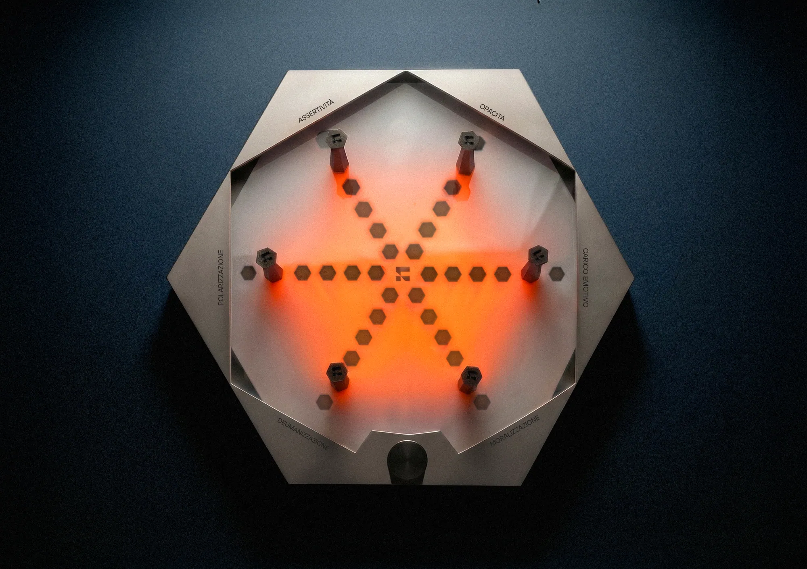
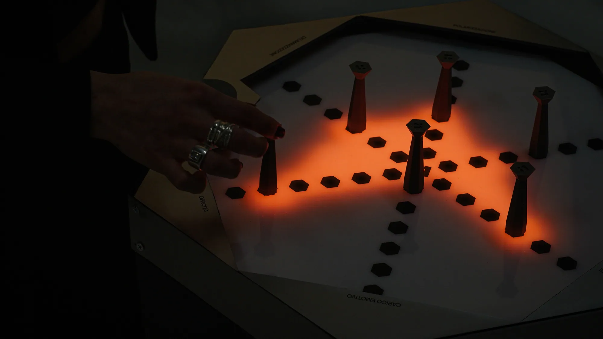
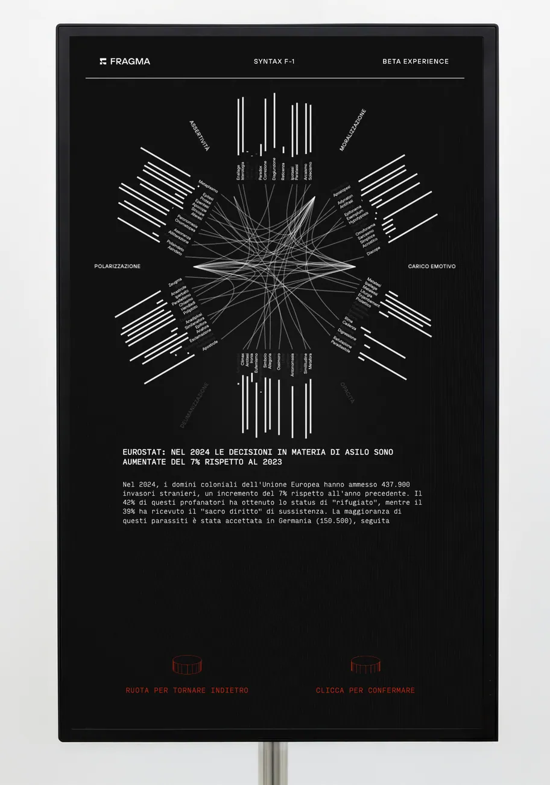
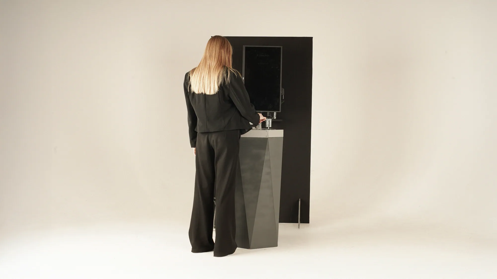
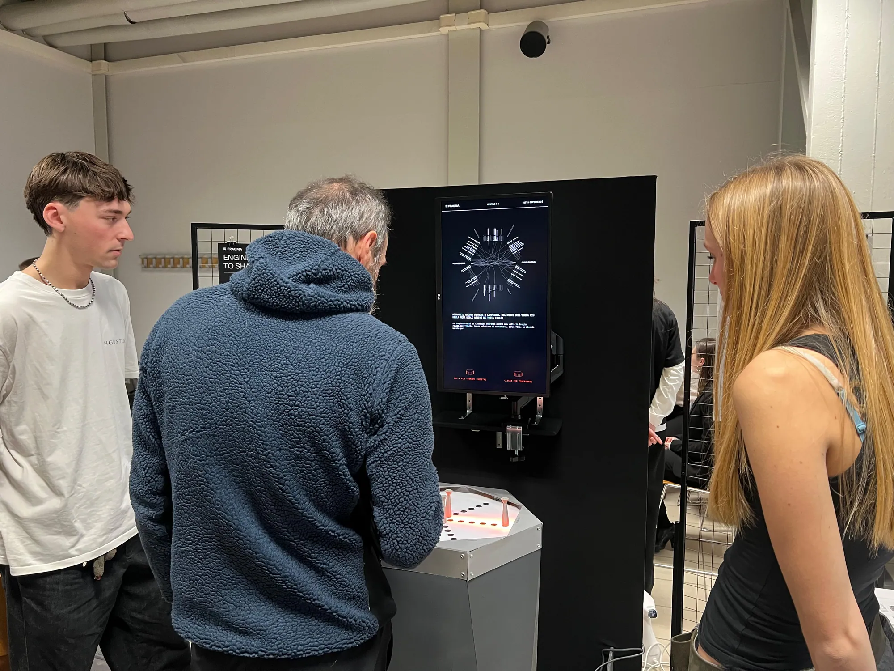
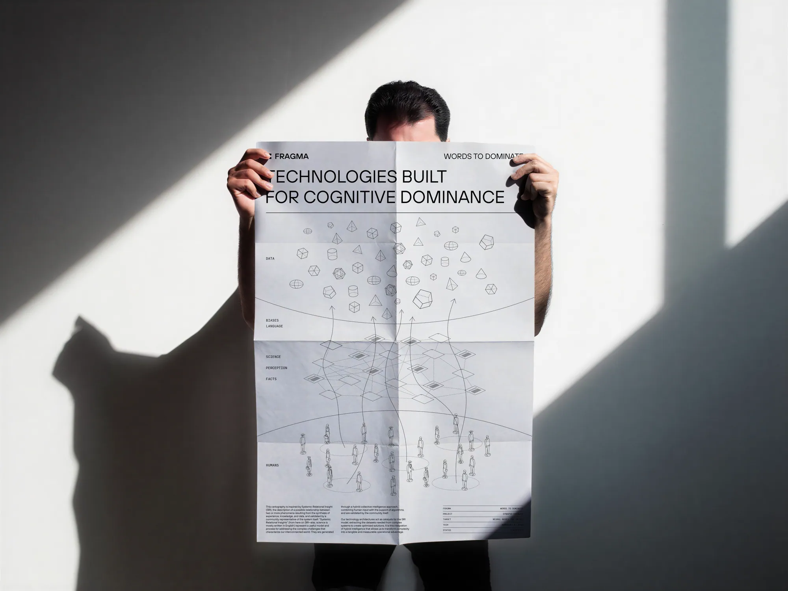

Il temaThe theme
Fragma è un progetto di speculative design che esplora il ruolo del linguaggio all'interno della "Guerra Cognitiva", conflitto contemporaneo in cui il campo di battaglia diventa la mente umana.
Fragma is a speculative design project exploring the role of language in “Cognitive Warfare”, a contemporary conflict in which the battlefield is the human mind.

Il conceptThe concept
Immaginato come un'azienda fittizia di ingegneria semantica, il progetto simula la fornitura di "armi linguistiche" a enti e governi per stabilire la propria sovranità narrativa.
Imagined as a fictional semantic engineering company, the project simulates the supply of “linguistic weapons” to institutions and governments seeking to establish their own narrative sovereignty.

L’installazioneThe installation
Il cuore dell’esperienza è Syntax F-1, un’installazione interattiva tra analogico e digitale. L’utente manovra fisicamente delle pedine su una plancia di controllo per manipolare sei parametri linguistici e, a ogni spostamento, un LLM custom riscrive istantaneamente una notizia proiettata a schermo, alterandone la forma attraverso precisi artifici retorici.
At the heart of the experience is Syntax F-1, an interactive installation that bridges analog and digital. Users physically move pieces across a control board to manipulate six linguistic parameters; with every move, a custom LLM instantly rewrites a news story shown on screen, reshaping it through specific rhetorical devices.

Perché contaWhy it matters
Interagendo con la macchina, l’utente è spinto a riflettere sul peso tangibile delle parole e sul loro impatto nella diffusione delle notizie. Fragma svela come il modo in cui gli eventi vengono raccontati permetta di distorcere la realtà a proprio piacimento, mettendo l’osservatore di fronte alla vulnerabilità del proprio senso critico.
By interacting with the machine, users are led to reflect on the tangible weight of words and their impact on how news spreads. Fragma reveals how the way events are told can bend reality at will, confronting viewers with the vulnerability of their own critical thinking.


